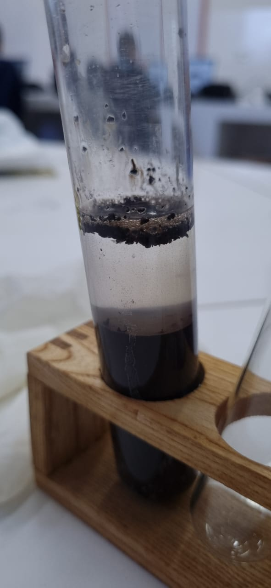

Solos
Eles preferem solos soltos, fofos, bem areados, ricos em matéria orgânica e livres de encharcamento. Entretanto, regiões de várzea e de solos encharcados também servem para o cultivo de feijão, com alguns cuidados. Isso ocorre desde que sejam cultivados em épocas de seca, com baixa quantidade de chuva

1º Becker
0,04 gramas de azul de bromotimol; 100ml de água destilada; 100 ml de alcool

2º Tubo de ensaio
10 gramas de terra; 30Ml de cloreto de potássio